An introduction to creating and analyzing surveys and questionnaires
Martin Schweinberger
2020-06-12

1 Introduction
This tutorial focuses on creating and analyzing surveys and questionnaires, offers some advice on what to consider when creating surveys and questionnaires, and provides some options for visualizing survey and questionnare data. However, issues relating to what software to use when creating a survey (e.g. SurveyMonkey, Qualtrics, GoogleForms, etc.) or how to program questionnaires or online experiments in Java or R are not discussed.
A survey is a research method for gathering information based on a sample of people. Questionnaires are a research instrument and typically represent a part of a survey, i.e. that part where participants are asked to answer a set of questions.
“Questionnaires are any written instruments that present respondents with a series of questions or statements to which they are to react either by writing out their answers or selecting among existing answers.” (Brown 2001, 6)
Questionnaires elicit three types of data:
- Factual
- Behavioral
- Attitudinal
While factual and behavioral questions are about what the respondent is and does, attitudinal questions tap into what the respondent thinks or feels.
The advantages of surveys are that they (a) offer a relative cheap, quick, and effective way to collect (targeted) data from a comparatively large set of people and (b) that they can be distributed or carried out in various formats (face-to-face, by telephone, by computer or via social media, or by postal service).
Disadvantages of questionnaires are that they prone to providing unreliable or unnatural data. Data gathered via surveys can be unreliable due to the social desirability bias which is the tendency of respondents to answer questions in a manner that will be viewed favorably by others. Thus, the data that surveys provide may not necessarily be representative of actual natural behavior.
Questionnaires and surveys are widely used in language research and thus one of the most common research designs. In this section, we will discuss what needs to kept in mind when designing questionnaires and surveys, what pieces of software or platforms one can use, options for visualizing questionnaire and survey data, statistical methods that are used to evaluate questionnaire and survey data (reliability), and which statistical methods are used in analyzing the data.
2 Things to consider when creating surveys
Here are some rules to consider during the creation of questionnaires and before the survey is distributed.
Surveys should not be longer than they have to be while collecting all the data that are needed. It is crucial that questionnaire collects all necessary data (including socio-demographic details).
The language should be simple and easy to understand - this means that jargon should be avoided. Also, leading questions are to be avoided and value judgements on the side of the creators of questionnaires should be avoided to prevent social desirability bias.
Before distributing a questionnaire, it should be piloted. Piloting is essential to check if respondents understand the questions as intended, and to check how long it takes to answer the questions. Also, the people who are involved in the piloting should be allowed to provide feedback to avoid errors.
When questions go beyond simply collecting socio-demographic details and if the data contains test and filler items, the order of questions (within blocks) should be quasi-randomized. Quasi-randomization means that test items are not asked in direct succession and that they do not appear as first or last items. Quasi-randomization helps to avoid fatigue effects or results that are caused by the ordering of questions. However, the questions should still follow an internally consistent logic so that related questions appear in the same block. Also, more specific questions should be asked after more general questions.
Questions must be unambigious and not refer to different aspects at once. Take, for instance, the following question:
- Do you consider UQ to be a good university with respect to teaching and research?".
If the resondent answers positively, then no issue arise but if the answer id “No”, then we do not know if the respondent thinks that UQ is not a good university with respect to teaching OR with resepct to research OR both! In such cases, questions should be split:
Do you consider UQ to be a good university with respect to teaching?
Do you consider UQ to be a good university with respect to research?"
To check if respondents are concentrated, read the questions carefilly, and answering truthfully, it is useful to include reverse questions, i.e. questions that have the opposite polarity. Reverse questions allow to check if respondents only answers “very satisfied” or “completely agree” without respect to the content of the question. Giving the same answer toquestions which have opposite propositions would indicate that respondents do not erad questions carefully or do not answer truthfully.
If questions are not open or unstructured, i.e. if differnt options to answer to a question are provided, it is crucial that the options are fine-grained enough so that the data that is collected allows us to answer the research question that we want to investigate. In this context, the scaling of answer options is important. Scales reflect different types of answering options and they come in three basic forms: nominal and categorical, ordinal, or numeric.
Nominal and categorical scales: Nominal and categorical scales only list the membership of a particular class. Nominal scales offer exactly two options (yes/no or on/off), while categorical scales offer several options (e.g. the state in which someone was born).
Ordinal scales: With ordinal scales it is possible to rank the values, but the distances between the ranks can not be exactly quantified. An example of an ordinal scales is the ranking in a 100-meter run. The 2nd in a 100-meter run did not go twice as fast as the 4th. It is often the case that ordinal variables consist of integer, positive numbers (1, 2, 3, 4, etc.). In the context of surveys, ordinal scales are the most important as all Likert scales (after the psychologist Rensis Likert) are ordinal scales. The levels of the typical five-level Likert item could be: Strongly disagree (1), Disagree (2) , Neither agree nor disagree (3), Agree (4), and Strongly agree (5). As such, the Likert scale is a bipolar scale that can be balanced, if there is an uneven number of options with the center option being neutral, or unbalaced, if there are an even number of options which forces respondents to express a preferences for wither of the two poles (this is called a “forced choice” method.
(True) Numeric scales: There are two basic types of numeric scales: interval-scales and ratio-scales. For interval scales, the differences between levels are significant, but not the relationship between levels. For instance, 20 degree Celsius is not twice as hot as 10 degree Celsius. For ratio-scales both the differences and the relationships between the levels are significant (e.g. the times in a 100-meter dash: 10 is exactly twice as high as 5 and half as much as 20).
3 Visualizing survey data
Just as the data that is provided by surveys and questionnaires can take various forms, there are numerous ways to display survey data. In the following, we will have a look at some of the most common or useful ways in which survey and questionnaire data can be visualized.
Line graphs for Likert-scaled data
A special case of line graphs is used when dealing with Likert-scaled variables. In such cases, the line graph displays the density of cumulative frequencies of responses. The difference between the cumulative frequencies of responses displays differences in preferences. We will only focus on how to create such graphs using the “ggplot” environment here as it has an inbuild function (“ecdf”) which is designed to handle such data.
In a first step, we create a data set which consists of a Likert-scaled variable. The fictitious data created here consists of rating of students from three courses about how satisfied they were with their language-learning course. The response to the Likert item is numeric so that “strongly disagree/very dissatisfied” would get the lowest and “strongly agree/very satisfied” the highest numeric value.
# activate packages
library(knitr)
library(lattice)
library(ggplot2)
library(dplyr)
library(likert)
library(MASS)
# load data
plotdata <- read.delim("https://slcladal.github.io/data/lmmdata.txt",
sep = "\t", header = TRUE)
likertdata1 <- read.delim("https://slcladal.github.io/data/likertdata1.txt",
sep = "\t", header = TRUE)
likertdata2 <- read.delim("https://slcladal.github.io/data/likertdata2.txt",
sep = "\t", header = TRUE)
# inspect data
kable(head(likertdata1), caption = "First 6 rows of likertdata1")| Course | Satisfaction |
|---|---|
| Chinese | 1 |
| Chinese | 1 |
| Chinese | 1 |
| Chinese | 1 |
| Chinese | 1 |
| Chinese | 1 |
Now that we have data resembling a Likert-scaled item from a questionnaire, we will display the data in a cumulative line graph.
# activate package
library(ggplot2)
# create cumulative density plot
ggplot(likertdata1,
aes(x = Satisfaction, color = Course)) +
geom_step(aes(y = ..y..), stat = "ecdf") +
labs(y = "Cumulative Density") +
scale_x_discrete(limits = c("1","2","3","4","5"),
breaks = c(1,2,3,4,5),
labels=c("very dissatisfied", "dissatisfied",
"neutral", "satisfied", "very satisfied")) +
scale_colour_manual(values = c("goldenrod2", "indianred4", "blue")) +
theme_bw() 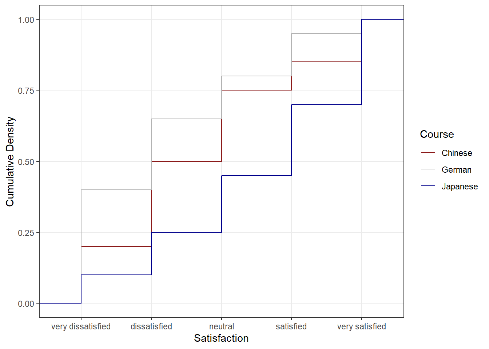
The satisfaction of the German course was the lowest as the red line shows the highest density (frequency of responses) of “very dissatisfied” and “dissatisfied” ratings. The students in our fictitious data set were most satisfied with the Chinese course as the blue line is the lowest for “very dissatisfied” and “dissatisfied” ratings while the difference between the courses shrinks for “satisfied” and “very satisfied”. The Japanese language course is in-between the German and the Chinese course.
Pie charts
Most commonly, the data for visualization comes from tables of absolute frequencies associated with a categorical or nominal variable. The default way to visualize such frequency tables are pie charts and bar plots.
In a first step, we modify the original data to get counts and percentages. The data represents the number of documents per time period and the percentage of those documents across all time periods.
# create bar plot data
bardata <- likertdata1 %>%
group_by(Satisfaction) %>%
dplyr::summarise(Frequency = n()) %>%
dplyr::mutate(Percent = round(Frequency/sum(Frequency)*100, 1)) %>%
dplyr::mutate(Satisfaction = ifelse(Satisfaction == 1, "very dissatisfied",
ifelse(Satisfaction == 2, "dissatisfied",
ifelse(Satisfaction == 3, "neutral",
ifelse(Satisfaction == 4, "satisfied",
ifelse(Satisfaction == 5, "very satisfied", Satisfaction)))))) %>%
dplyr::mutate(Satisfaction = factor(Satisfaction,
levels = c("very dissatisfied",
"dissatisfied",
"neutral",
"satisfied",
"very satisfied")))
# inpsect data
# inspect data
kable(head(bardata), caption = "First 6 rows of bardata")Before creating bar plots, we will briefly turn to pie charts because pie charts are very common despite suffering from certain shortcomings. Consider the following example which highlights some of the issues that arise when using pie charts.
# create pie chart
ggplot(bardata, aes("", Percent, fill = Satisfaction)) +
geom_bar(stat="identity", width=1, color = "white") +
coord_polar("y", start=0) +
scale_fill_manual(values = c("firebrick4", "firebrick1",
"gray70",
"blue", "darkblue")) +
theme_void()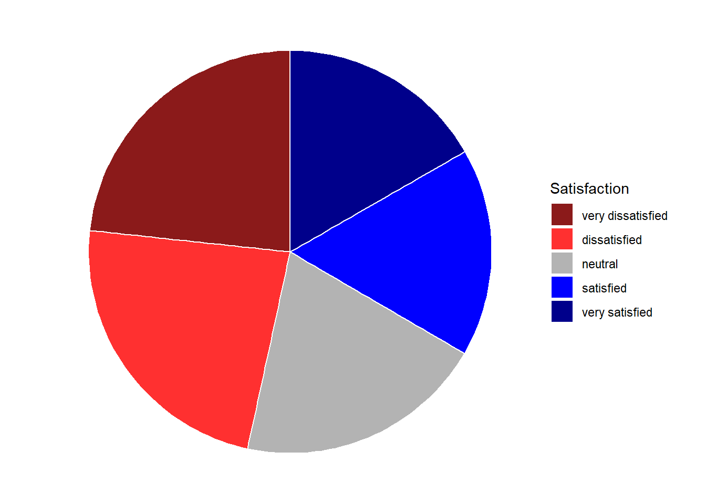
If the slices of the pie chart are not labelled, it is difficult to see which slices are smaller or bigger compared to other slices. This problem can easily be avoided when using a bar plot instead.
The labelling of pie charts is, however, somewhat tedious as the positioning is tricky. Below is an example for adding labels without specification.
# create pie chart
ggplot(bardata, aes("", Percent, fill = Satisfaction)) +
geom_bar(stat="identity", width=1, color = "white") +
coord_polar("y", start=0) +
scale_fill_manual(values = c("firebrick4", "firebrick1",
"gray70",
"blue", "darkblue")) +
theme_void() +
geom_text(aes(y = Percent, label = Percent), color = "white", size=6)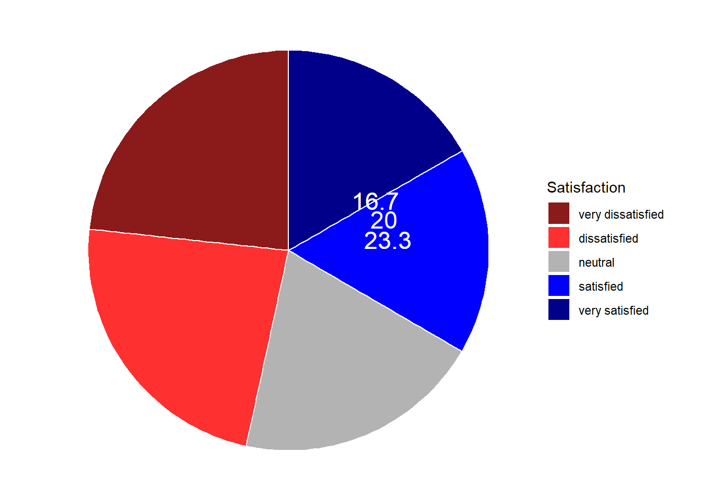
To place the labels where they make sense, we will add another variable to the data called “Position”.
piedata <- bardata %>%
dplyr::arrange(desc(Satisfaction)) %>%
dplyr::mutate(Position = cumsum(Percent)- 0.5*Percent)
# inspect data
kable(head(piedata), caption = "First 6 rows of piedata")| Satisfaction | Frequency | Percent | Position |
|---|---|---|---|
| very satisfied | 50 | 16.7 | 8.35 |
| satisfied | 50 | 16.7 | 25.05 |
| neutral | 60 | 20.0 | 43.40 |
| dissatisfied | 70 | 23.3 | 65.05 |
| very dissatisfied | 70 | 23.3 | 88.35 |
Now that we have specified the position, we can include it into the pie chart.
# create pie chart
ggplot(piedata, aes("", Percent, fill = Satisfaction)) +
geom_bar(stat="identity", width=1, color = "white") +
coord_polar("y", start=0) +
scale_fill_manual(values = c("firebrick4", "firebrick1",
"gray70",
"blue", "darkblue")) +
theme_void() +
geom_text(aes(y = Position, label = Percent), color = "white", size=6)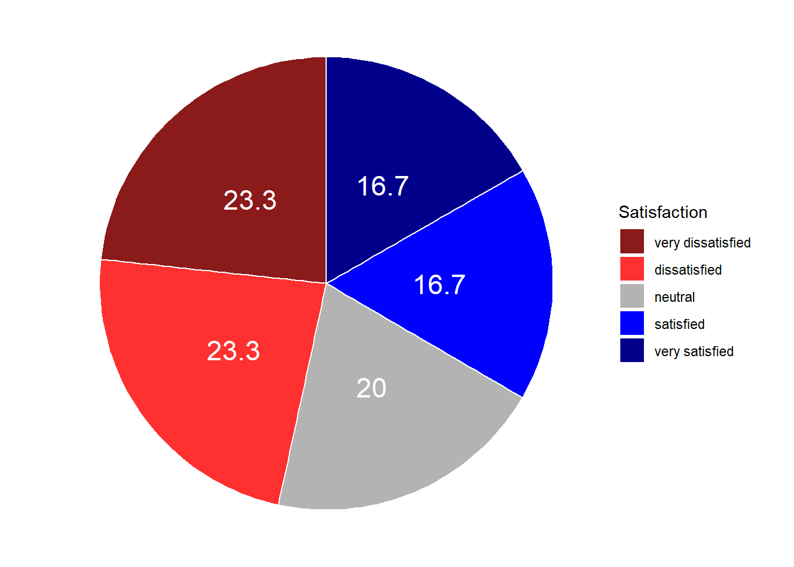
We will now create separate pie charts for each course. In a first step, we cerate a data set that does not only contain the Satisfaction levels and their frequency but also the course.
# create grouped pie data
groupedpiedata <- likertdata1 %>%
group_by(Course, Satisfaction) %>%
dplyr::summarise(Frequency = n()) %>%
dplyr::mutate(Percent = round(Frequency/sum(Frequency)*100, 1)) %>%
dplyr::mutate(Satisfaction = ifelse(Satisfaction == 1, "very dissatisfied",
ifelse(Satisfaction == 2, "dissatisfied",
ifelse(Satisfaction == 3, "neutral",
ifelse(Satisfaction == 4, "satisfied",
ifelse(Satisfaction == 5, "very satisfied", Satisfaction)))))) %>%
dplyr::mutate(Satisfaction = factor(Satisfaction,
levels = c("very dissatisfied",
"dissatisfied",
"neutral",
"satisfied",
"very satisfied"))) %>%
dplyr::arrange(desc(Satisfaction)) %>%
dplyr::mutate(Position = cumsum(Percent)- 0.5*Percent)
# inspect data
kable(head(groupedpiedata), caption = "First 6 rows of groupedpiedata")| Course | Satisfaction | Frequency | Percent | Position |
|---|---|---|---|---|
| Chinese | very satisfied | 15 | 15 | 7.5 |
| German | very satisfied | 5 | 5 | 2.5 |
| Japanese | very satisfied | 30 | 30 | 15.0 |
| Chinese | satisfied | 10 | 10 | 20.0 |
| German | satisfied | 15 | 15 | 12.5 |
| Japanese | satisfied | 25 | 25 | 42.5 |
Now that we have created the data, we can plot separate pie charts for each course.
# create pie chart
ggplot(groupedpiedata, aes("", Percent, fill = Satisfaction)) +
facet_wrap(~Course) +
geom_bar(stat="identity", width=1, color = "white") +
coord_polar("y", start=0) +
scale_fill_manual(values = c("firebrick4", "firebrick1",
"gray70",
"blue", "darkblue")) +
theme_void() +
geom_text(aes(y = Position, label = Percent), color = "white", size=4)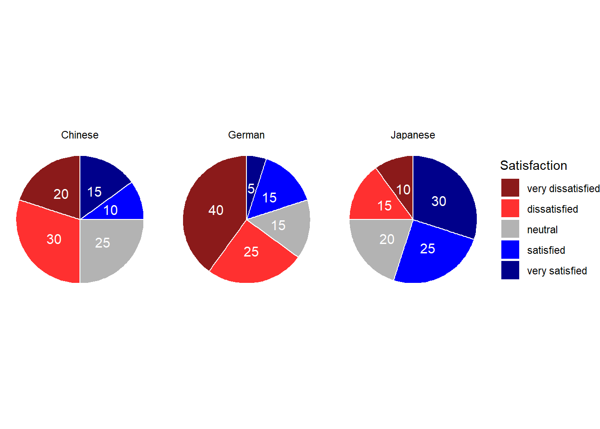
Bar plots
Like pie charts, bar plot display frequency information across categorical variable levels.
# bar plot
ggplot(bardata, aes(Satisfaction, Percent, fill = Satisfaction)) +
# determine type of plot
geom_bar(stat="identity") +
# use black & white theme
theme_bw() +
# add and define text
geom_text(aes(y = Percent-5, label = Percent), color = "white", size=3) +
# add colors
scale_fill_manual(values = c("firebrick4", "firebrick1",
"gray70",
"blue", "darkblue")) +
# supress legend
theme(legend.position="none")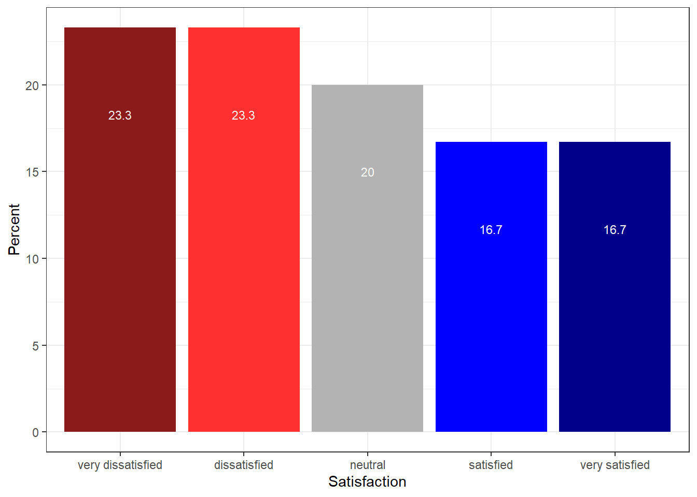
Compared with the pie chart, it is much easier to grasp the relative size and order of the percentage values which shows that pie charts are unfit to show relationships between elements in a graph and, as a general rule of thumb, should be avoided.
Bar plot can be grouped to add another layer of information which is particularly useful when dealing with frequency counts across multiple categorical variables. But before we can create grouped bar plots, we need to create an appropriate data set.
# create bar plot data
groupedbardata <- likertdata1 %>%
group_by(Course, Satisfaction) %>%
dplyr::summarise(Frequency = n()) %>%
dplyr::mutate(Percent = round(Frequency/sum(Frequency)*100, 1)) %>%
dplyr::mutate(Satisfaction = ifelse(Satisfaction == 1, "very dissatisfied",
ifelse(Satisfaction == 2, "dissatisfied",
ifelse(Satisfaction == 3, "neutral",
ifelse(Satisfaction == 4, "satisfied",
ifelse(Satisfaction == 5, "very satisfied", Satisfaction)))))) %>%
dplyr::mutate(Satisfaction = factor(Satisfaction,
levels = c("very dissatisfied",
"dissatisfied",
"neutral",
"satisfied",
"very satisfied")))
# inpsect data
kable(head(groupedbardata), caption = "First 6 rows of groupedbardata")We have now added Genre as an additional categorical variable and will include Genre as the “fill” argument in our bar plot. To group the bars, we use the command “position=position_dodge()”.
# bar plot
ggplot(groupedbardata,
aes(Satisfaction, Frequency, fill = Course)) +
geom_bar(stat="identity", position = position_dodge()) +
theme_bw() 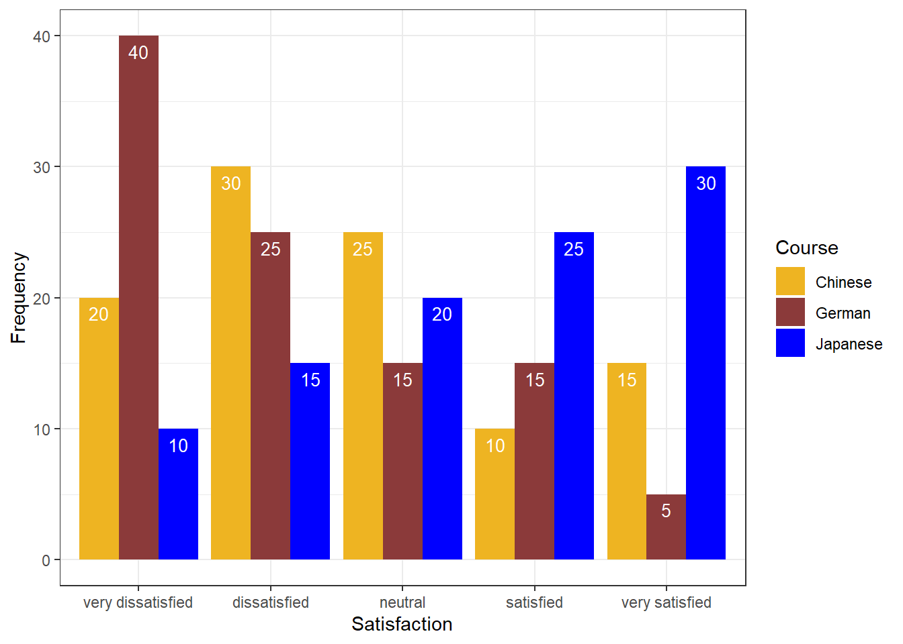
If we leave out the “position=position_dodge()” argument, we get a stacked bar plot as shown below.
# bar plot
ggplot(groupedbardata,
aes(Satisfaction, Frequency, fill = Course)) +
geom_bar(stat="identity") +
theme_bw() 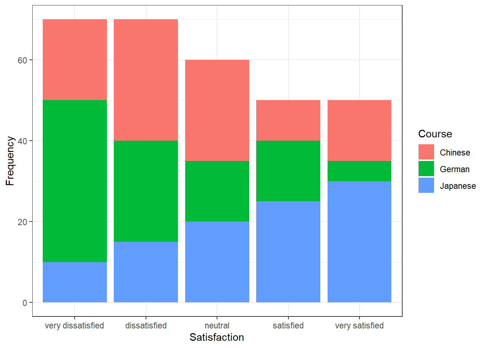
One issue to consider when using stacked bar plots is the number of variable levels: when dealing with many variable levels, stacked bar plots tend to become rather confusing. This can be solved by either collapsing infrequent variable levels or choose a colour palette that reflects some other inherent piece of information such as formality (e.g. blue) versus informality (e.g. red).
Stacked bar plots can also be normalized so that changes in percentages become visible. This is done by exchanging “position=position_dodge()” with “position=”“fill”".
# bar plot
ggplot(groupedbardata,
aes(Course, Frequency, fill = Satisfaction)) +
geom_bar(stat="identity", position="fill") +
# define colors
scale_fill_manual(values=c("firebrick4", "firebrick1", "gray70",
"blue", "darkblue")) +
scale_color_manual(values=c("firebrick4", "firebrick1", "gray70",
"blue", "darkblue")) +
labs(y = "Percent") +
scale_y_continuous(breaks=seq(0,1,.2),
labels=seq(0,100,20)) +
theme_bw() 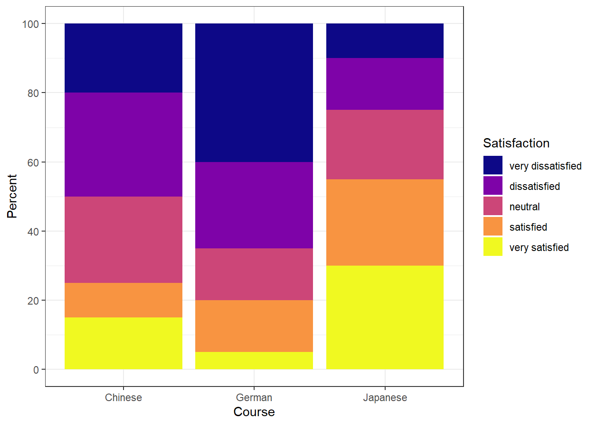
Bar plots for Likert data
Bar plots are particularly useful when visualizing data obtained through Likert items. As this is a very common issue that empirical researchers face. There are two basic ways to display Likert items using bar plots: grouped bar plots and more elaborate scaled bar plots.
Although we have seen above how to create grouped bar plots, we will repeat it here with the language course example used above when we used cumulative density line graphs to visualise how to display Likert data.
In a first step, we recreate the data set which we have used above. The data set consists of a Likert-scaled variable (Satisfaction) which represents rating of students from three courses about how satisfied they were with their language-learning course. The response to the Likert item is numeric so that “strongly disagree/very dissatisfied” would get the lowest and “strongly agree/very satisfied” the highest numeric value.
Now that we have data resembling a Likert-scaled item from a questionnaire, we will display the data in a cumulative line graph.
# create grouped bar plot
ggplot(groupedbardata, aes(Satisfaction, Frequency,
fill = Course, color = Course)) +
geom_bar(stat="identity", position=position_dodge()) +
geom_line() +
# define colors
scale_fill_manual(values=c("goldenrod2", "gray70", "indianred4")) +
scale_color_manual(values=c("goldenrod", "gray60", "indianred")) +
# add text and define colour
geom_text(aes(label=Frequency), vjust=1.6, color="white",
# define text position and size
position = position_dodge(0.9), size=3.5) +
theme_bw()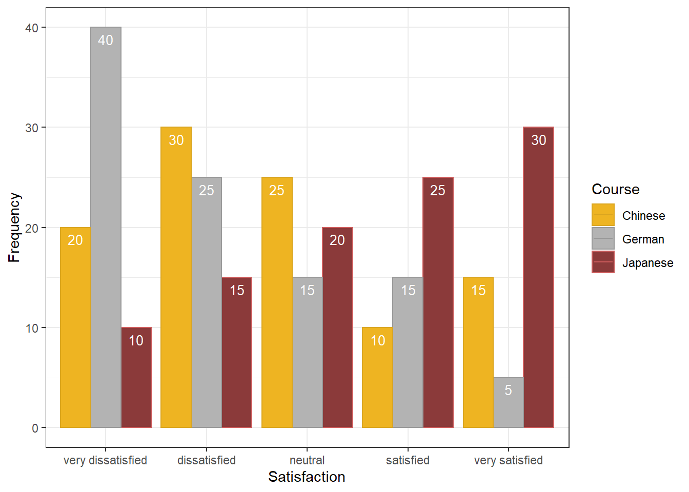
Again, we can also plot separate bar graphs for each class by specifying “facets”.
# create grouped bar plot
ggplot(groupedbardata, aes(Satisfaction, Frequency,
fill = Satisfaction, color = Satisfaction)) +
facet_grid(rows = groupedbardata$Course) +
geom_bar(stat="identity", position=position_dodge()) +
geom_line() +
# define colors
scale_fill_manual(values=c("firebrick4", "firebrick1", "gray70",
"blue", "darkblue")) +
scale_color_manual(values=c("firebrick4", "firebrick1", "gray70",
"blue", "darkblue")) +
# add text and define colour
geom_text(aes(label=Frequency), vjust=1.6, color="white",
# define text position and size
position = position_dodge(0.9), size=3.5) +
theme_bw()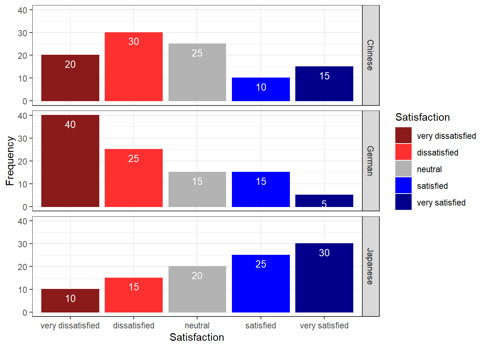
Another and very interesting way to display such data is by using the Likert package. In a first step, we need to activate the package, clean the data, and extract a subset for the data visualization example.
One aspect that is different to previous visualizations is that, when using the Likert package, we need to transform the data into a “likert” object (which is, however, very eays and is done by using the “likert()” function as shown below).
# load data
likertdata2 <- read.delim("https://slcladal.github.io/data/likertdata2.txt", header = TRUE)
# transform into a likert object
likertdata2 <- likert(likertdata2)
# inspect data
kable(likertdata2$results, caption = "Summary of the data") | Item | Agree | Disagree | Strongly agree | Strongly disagree |
|---|---|---|---|---|
| Question1 | 14 | 40 | 8 | 38 |
| Question2 | 26 | 48 | 14 | 12 |
| Question3 | 40 | 20 | 12 | 28 |
| Question4 | 18 | 40 | 8 | 34 |
| Question5 | 44 | 24 | 10 | 22 |
| Question6 | 12 | 30 | 4 | 54 |
| Question7 | 44 | 28 | 12 | 16 |
| Question8 | 12 | 40 | 12 | 36 |
| Question9 | 10 | 32 | 10 | 48 |
| Question10 | 42 | 22 | 24 | 12 |
# inspect data
kable(head(likertdata2$items), caption = "First 6 rows of the data") | Question1 | Question2 | Question3 | Question4 | Question5 | Question6 | Question7 | Question8 | Question9 | Question10 | |
|---|---|---|---|---|---|---|---|---|---|---|
| Respondent1 | Disagree | Strongly agree | Strongly agree | Strongly disagree | Strongly agree | Strongly disagree | Agree | Disagree | Strongly disagree | Agree |
| Respondent2 | Agree | Strongly disagree | Strongly disagree | Strongly agree | Strongly disagree | Agree | Strongly disagree | Agree | Strongly agree | Strongly disagree |
| Respondent3 | Strongly agree | Strongly disagree | Strongly disagree | Agree | Strongly disagree | Strongly agree | Strongly disagree | Agree | Disagree | Disagree |
| Respondent4 | Disagree | Disagree | Agree | Strongly disagree | Disagree | Disagree | Agree | Strongly disagree | Strongly disagree | Agree |
| Respondent5 | Strongly disagree | Disagree | Strongly disagree | Disagree | Strongly disagree | Disagree | Disagree | Agree | Agree | Agree |
| Respondent6 | Agree | Strongly disagree | Strongly disagree | Agree | Strongly disagree | Agree | Strongly disagree | Agree | Strongly agree | Strongly disagree |
After extracting a sample of the data, we plot it to show how the Likert data can be displayed.
# plot likert data
plot(likertdata2)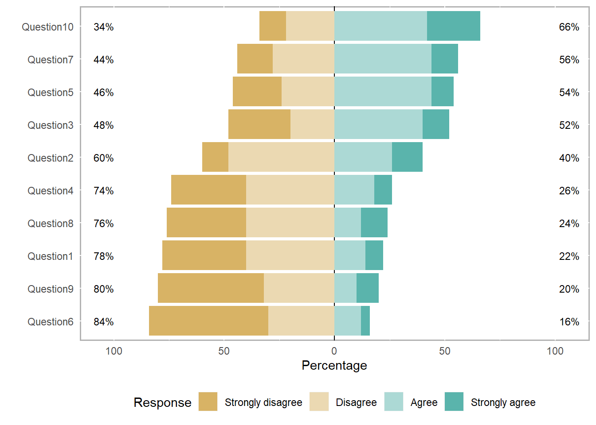
4 Useful statistics for survey data
This section introduces some statistical measures or tests that sueful when dealing with survey data. We will begin with measures of realiability (Cronbach’s \(\alpha\)), then move on to methods for merging variables (Factor analysis and principle component naalysis), and finally to ordinal regression which tests which variables correlate with a certain outcome.
4.1 Cronbach’s Alpha
Evaluating the reliability of questions: Cronbach’s Alpha
Oftentimes several questions in one questionnaire aim to tap into the same cognitive concept or attitude or whatever we are interested in. The answers to these related questions should be internally consistent, i.e. the responses should correlate strongly and positively.
Cronbach’s \(\alpha\) (Cronbach 1951) is measure of internal consistency or reliability that provides information on how strongly the responses to a set of questions correlate. The formula for Cronbach’s \(\alpha\) is shown below (N: number of items, \(\bar c\): average inter-item co-variance among items, \(\bar v\): average variance).
\(\alpha = \frac{N*\bar c}{\bar v + (N-1)\bar c}\)
If the values for Cronbach’s \(\alpha\) are low (below .7), then this indicates that the questions are not internally consistent (and do not tap into the same concept) or that the questions are not uni-dimensional (as they should be).
While Cronbach’s \(\alpha\) is the most frequently used measures of reliability (probably because it is conceptually simple and can be computed very easily), it underestimates the reliability of a test and overestimates the first factor saturation. This can be a problem is the data is lumpy. Thus, various other measuers of realiability have been proposed.
An alternative reliability measuer that takes the amount of variance per itsm into account and thus performs better when dealing with lumpy data (although it is still affected by lumpyness) is Guttman’s Lambda 6 (G6) (Guttman 1945). In contrast to Cronbach’s \(\alpha\), G6 is mostly used to evaluate the reliability of individual test items though. This means that it provides information about how well individual questions reflect the concept that they aim to tap into.
Probably the best measures of reliability are \(\omega\) (omega) measures. Hierarchical \(\omega\) provides more appropriate estimates of the general factor saturation while total \(\omega\) is a better estimate of the reliability of the total test compared to both Cronbach’s \(\alpha\) and G6 (Revelle and Zinbarg 2009).
Calculating Cronbach’s alpha in R
We will now calculate Cronbach’s \(\alpha\) in R. In a first step, we activate the “psych” package and load as well as inspect the data.
# activate package
library(psych)
# load data
surveydata <- read.delim("https://slcladal.github.io/data/surveydata1.txt", sep = "\t", header = T)
# inpsect data
kable(head(surveydata), caption = "First 6 rows of surveydata")| Respondent | Q01_Outgoing | Q02_Outgoing | Q03_Outgoing | Q04_Outgoing | Q05_Outgoing | Q06_Intelligence | Q07_Intelligence | Q08_Intelligence | Q09_Intelligence | Q10_Intelligence | Q11_Attitude | Q12_Attitude | Q13_Attitude | Q14_Attitude | Q15_Attitude |
|---|---|---|---|---|---|---|---|---|---|---|---|---|---|---|---|
| Respondent_01 | 4 | 5 | 4 | 4 | 5 | 2 | 3 | 3 | 2 | 2 | 3 | 3 | 2 | 3 | 3 |
| Respondent_02 | 5 | 4 | 5 | 4 | 4 | 2 | 2 | 2 | 1 | 2 | 4 | 4 | 4 | 5 | 4 |
| Respondent_03 | 5 | 4 | 4 | 5 | 5 | 2 | 1 | 1 | 2 | 2 | 5 | 4 | 4 | 4 | 4 |
| Respondent_04 | 5 | 5 | 5 | 4 | 5 | 1 | 1 | 1 | 1 | 1 | 5 | 4 | 5 | 5 | 5 |
| Respondent_05 | 4 | 5 | 4 | 5 | 5 | 2 | 2 | 1 | 2 | 1 | 4 | 5 | 4 | 5 | 5 |
| Respondent_06 | 5 | 5 | 5 | 5 | 4 | 5 | 4 | 5 | 2 | 2 | 1 | 2 | 1 | 2 | 1 |
The inspection of the data shows that the responses of participants represent the rows and that the questions represent columns. The column names show that we have 15 questions and that the first five questions aim to test how outgoing respondents are. To check if the first five questions reliably test “outgoingness” (or “extraversion”), we calculate Cronbach’s aplha for these five questions.
Thus, we use the “alpha()” function and provide the questions that tap into the concept we want to assess. In addition to Cronbach’s \(\alpha\), the “alpha()” function also reports Guttman’s lambda_6 which is an alternative measure for realiability. This is an advantage becuse Cronbach’s \(\alpha\) underestimates the reliability of a test and overestimates the first factor saturation.
# calculate cronbach's alpha
Cronbach <- alpha(surveydata[c("Q01_Outgoing",
"Q02_Outgoing",
"Q03_Outgoing",
"Q04_Outgoing",
"Q05_Outgoing")], check.keys=F)
# inspect results
Cronbach##
## Reliability analysis
## Call: alpha(x = surveydata[c("Q01_Outgoing", "Q02_Outgoing", "Q03_Outgoing",
## "Q04_Outgoing", "Q05_Outgoing")], check.keys = F)
##
## raw_alpha std.alpha G6(smc) average_r S/N ase mean sd median_r
## 0.98 0.98 0.97 0.89 42 0.0083 3.1 1.5 0.9
##
## lower alpha upper 95% confidence boundaries
## 0.96 0.98 0.99
##
## Reliability if an item is dropped:
## raw_alpha std.alpha G6(smc) average_r S/N alpha se var.r med.r
## Q01_Outgoing 0.97 0.97 0.97 0.89 33 0.0108 0.00099 0.89
## Q02_Outgoing 0.97 0.97 0.96 0.89 31 0.0116 0.00054 0.89
## Q03_Outgoing 0.97 0.97 0.97 0.90 35 0.0104 0.00095 0.90
## Q04_Outgoing 0.97 0.97 0.96 0.89 31 0.0115 0.00086 0.89
## Q05_Outgoing 0.98 0.98 0.97 0.91 41 0.0088 0.00034 0.91
##
## Item statistics
## n raw.r std.r r.cor r.drop mean sd
## Q01_Outgoing 20 0.96 0.96 0.95 0.94 3.1 1.5
## Q02_Outgoing 20 0.97 0.97 0.96 0.95 3.2 1.6
## Q03_Outgoing 20 0.95 0.95 0.94 0.93 3.1 1.5
## Q04_Outgoing 20 0.97 0.97 0.96 0.95 3.0 1.6
## Q05_Outgoing 20 0.94 0.94 0.91 0.90 3.2 1.6
##
## Non missing response frequency for each item
## 1 2 3 4 5 miss
## Q01_Outgoing 0.20 0.2 0.10 0.25 0.25 0
## Q02_Outgoing 0.15 0.3 0.05 0.15 0.35 0
## Q03_Outgoing 0.15 0.3 0.05 0.25 0.25 0
## Q04_Outgoing 0.25 0.2 0.05 0.30 0.20 0
## Q05_Outgoing 0.20 0.2 0.10 0.20 0.30 0The output of the “alpha()” function is rather extensive and we will only interpret selected output here.
The value under alpha is Cronbach’s \(\alpha\) and it should be above 0.7. The values to its left and right are the lower and upper bound of its confidence interval. The values in the column with the header “G6” show how well each question represents the concept it aims to reflect. Low values indicate that the question does not reflect the underyling concept while high values (.7 and higher) indicate that the question acptures that concept well (or to an acceptable degree).
4.2 Factor analysis
When dealing with many variables it is often the case that several variables are related and represent a common, underlying factor. To find such underlying factors, we can use a factor analysis.
Factor analysis is a method that allows to find commonalities or structure in data. This is particularly useful when dealing with many variables. Factors can be considered hidden latent variables or driving forces that affect or underly serveral variables at once.
This becomes particularly apparent when considering sociodemographic variables as behaviors are not only dependent on single variables, e.g., economic status, but on the interaction of several additonal variables such as education level, marital status, number of children, etc. All of these variables can be combined into a single factor (or hidden latent variable).
# remove respondent
surveydata <- surveydata %>%
dplyr::select(-Respondent)
factoranalysis <- factanal(surveydata, 3, rotation="varimax")
print(factoranalysis, digits=2, cutoff=.2, sort=TRUE)##
## Call:
## factanal(x = surveydata, factors = 3, rotation = "varimax")
##
## Uniquenesses:
## Q01_Outgoing Q02_Outgoing Q03_Outgoing Q04_Outgoing
## 0.09 0.06 0.12 0.07
## Q05_Outgoing Q06_Intelligence Q07_Intelligence Q08_Intelligence
## 0.14 0.10 0.13 0.10
## Q09_Intelligence Q10_Intelligence Q11_Attitude Q12_Attitude
## 0.28 0.41 0.08 0.14
## Q13_Attitude Q14_Attitude Q15_Attitude
## 0.04 0.09 0.06
##
## Loadings:
## Factor1 Factor2 Factor3
## Q06_Intelligence -0.82 0.25 0.41
## Q07_Intelligence -0.80 0.47
## Q08_Intelligence -0.85 0.42
## Q09_Intelligence -0.79 0.29
## Q11_Attitude 0.96
## Q12_Attitude 0.92
## Q13_Attitude 0.97
## Q14_Attitude 0.95
## Q15_Attitude 0.96
## Q01_Outgoing 0.94
## Q02_Outgoing 0.96
## Q03_Outgoing 0.93
## Q04_Outgoing 0.96
## Q05_Outgoing 0.92
## Q10_Intelligence -0.22 -0.46 0.57
##
## Factor1 Factor2 Factor3
## SS loadings 7.29 4.78 1.02
## Proportion Var 0.49 0.32 0.07
## Cumulative Var 0.49 0.80 0.87
##
## Test of the hypothesis that 3 factors are sufficient.
## The chi square statistic is 62.79 on 63 degrees of freedom.
## The p-value is 0.484The results of a factor analysis can be visualized so that questions which reflect the same underlying factor are grouped together.
# plot factor 1 by factor 2
load <- factoranalysis$loadings[,1:2]
plot(load,type="n") # set up plot
text(load,
labels=names(surveydata),
cex=.7) # add variable names 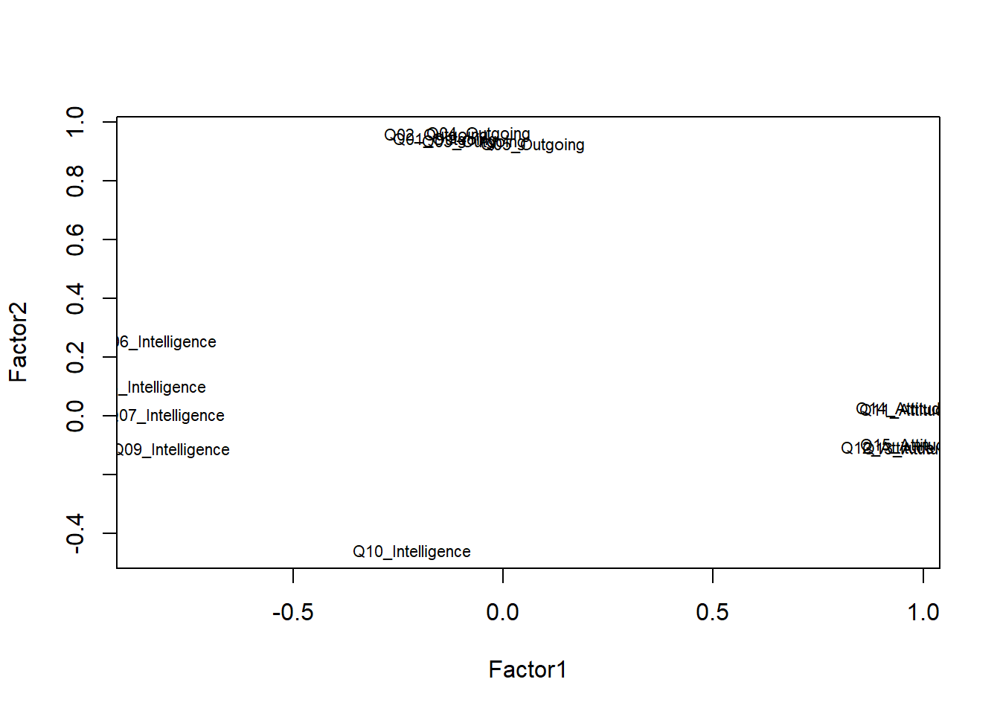
The plot shows that the questions form groups which indicates that the questions do a rather good job at reflecting the concepts that they aim to tap into. The only problematic question is question 10 (Q10) which aimed to tap into the intelligence of respondents but appears not to correlate strongly with the other questions that aim to extract information about the respondents intelligance. In such cases, it makes sense, to remove a question (in this case Q10) from the survey as it does not appear to reflect waht we wanted it to.
4.3 Principle component analysis
Principal component analysis is used when several questions or variables reflect a common factor and they should be combined into a single variable, e.g. during the statistical analysis of the data. Thus, principal component analysis can be used to collapse different variables (or questions) into one.
Imagine you have measured leghts of sentences in different ways (in words, syllables, characters, time it takes to pronounce, etc.). You could combine all these different measures of length by applying a PCA to those measures and using the first principal component as a single proxy for all these different measures.
# entering raw data and extracting PCs from the correlation matrix
PrincipalComponents <- princomp(surveydata[c("Q01_Outgoing",
"Q02_Outgoing",
"Q03_Outgoing",
"Q04_Outgoing",
"Q05_Outgoing")], cor=TRUE)
summary(PrincipalComponents) # print variance accounted for## Importance of components:
## Comp.1 Comp.2 Comp.3 Comp.4 Comp.5
## Standard deviation 2.1399452 0.41221349 0.33747971 0.29869830 0.218177126
## Proportion of Variance 0.9158731 0.03398399 0.02277851 0.01784413 0.009520252
## Cumulative Proportion 0.9158731 0.94985710 0.97263561 0.99047975 1.000000000The output shows that the first component (Comp.1) explains 91.58 percent of the variance. This shows that we only lose 8.42 percent of the variance if we use this component as a proxy for “outgoingness” if we use th collapsed componnet rather than the five individual items.
loadings(PrincipalComponents) # pc loadings##
## Loadings:
## Comp.1 Comp.2 Comp.3 Comp.4 Comp.5
## Q01_Outgoing 0.448 0.324 0.831
## Q02_Outgoing 0.453 0.242 -0.408 -0.360 0.663
## Q03_Outgoing 0.446 0.405 0.626 -0.405 -0.286
## Q04_Outgoing 0.452 -0.191 -0.568 -0.114 -0.650
## Q05_Outgoing 0.437 -0.798 0.342 0.230
##
## Comp.1 Comp.2 Comp.3 Comp.4 Comp.5
## SS loadings 1.0 1.0 1.0 1.0 1.0
## Proportion Var 0.2 0.2 0.2 0.2 0.2
## Cumulative Var 0.2 0.4 0.6 0.8 1.0We now check if the five questions that are intended to tap into “outgoingness” represent one (and not more) underlying factors. Do check this, we create a scree plot.
plot(PrincipalComponents,type="lines") # scree plot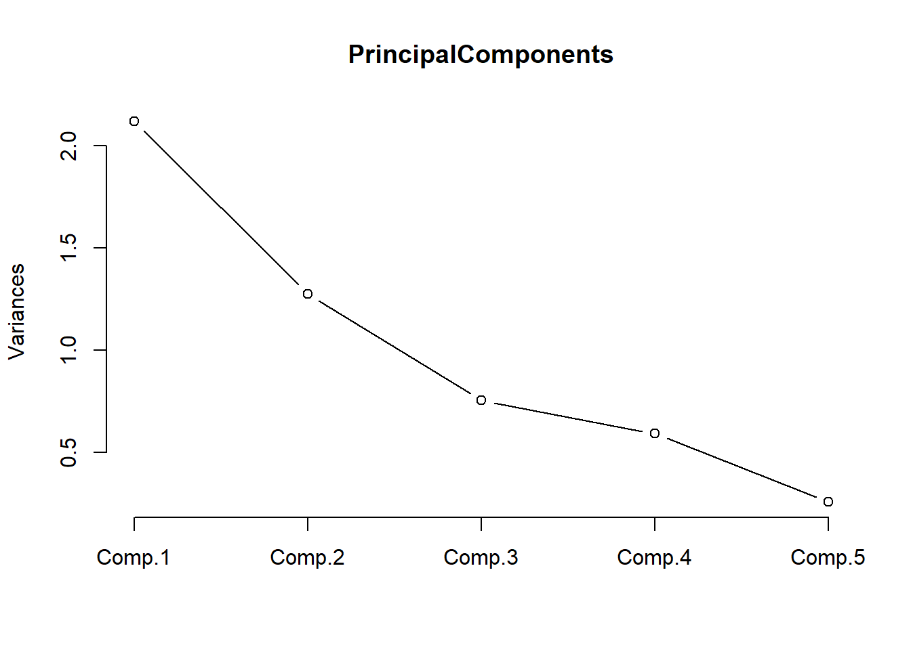
The scree plot shown above indicates that we only need a single component to explain the variance as there is a steep decline from the first to the second component. This confims that the questions that tap into “outgoingness” represent one (and not more) underlying factors.
PrincipalComponents$scores # the principal components## Comp.1 Comp.2 Comp.3 Comp.4 Comp.5
## [1,] 1.8381566 -0.36615228 -0.05472481 -0.185982784 0.45151980
## [2,] 1.8663059 0.49141424 0.43588461 0.293520579 -0.29327024
## [3,] 2.1435874 -0.43109571 -0.14566197 0.529200331 -0.37631017
## [4,] 2.4439739 0.12865309 0.39433418 0.093406447 0.28596101
## [5,] 2.1362155 -0.49209851 -0.42957061 -0.260901209 0.02261552
## [6,] 2.4573568 0.52187899 -0.20319399 -0.014602480 -0.29283073
## [7,] 2.1362155 -0.49209851 -0.42957061 -0.260901209 0.02261552
## [8,] 1.8506180 -0.24517164 0.63889114 -0.230285827 -0.17380089
## [9,] 1.8538444 0.37043360 -0.25773134 0.337823622 0.33205045
## [10,] 1.8589340 0.43041145 0.15197597 -0.496580962 0.10565545
## [11,] -2.2853351 0.62953122 0.07366357 0.047245923 0.18176903
## [12,] -0.8111853 0.23229139 -0.69790263 0.254191848 -0.06639018
## [13,] -1.1175602 -0.31734547 0.16385834 0.595405408 0.08305777
## [14,] -2.2853351 0.62953122 0.07366357 0.047245923 0.18176903
## [15,] -2.2876401 0.28617124 -0.32085807 -0.584569410 -0.27755336
## [16,] -2.8994684 -0.54085723 0.11151975 0.034151826 0.06787149
## [17,] -1.7026001 -0.01558712 -0.07849987 0.005417999 -0.09724779
## [18,] -3.1841445 -0.02168511 -0.11116261 0.001061325 -0.08201597
## [19,] -1.1124706 -0.25736763 0.57356565 -0.238999176 -0.14333724
## [20,] -2.8994684 -0.54085723 0.11151975 0.034151826 0.06787149biplot(PrincipalComponents) 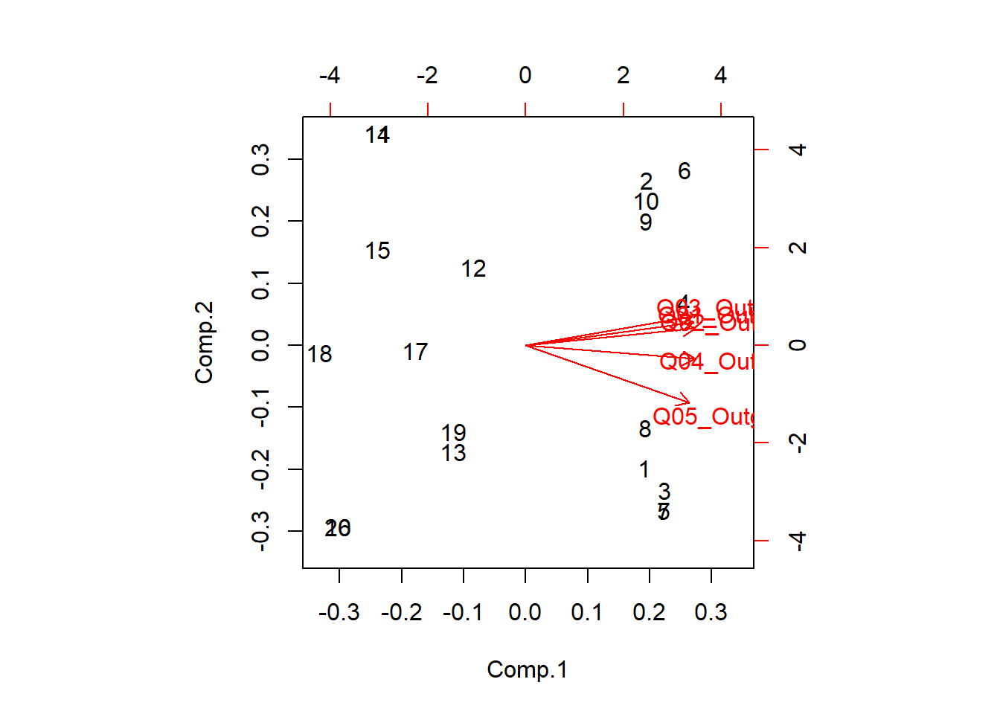
4.4 Ordinal Regression
Ordinal regression is very similar to multiple linear regression but takes an ordinal dependent variable (Agresti 2010). For this reason, ordinal regression is one of the key methods in analysing Likert data.
To see how an ordinal regression is implemented in R, we load and inspect the “ordinaldata” data set. The data set consists of 400 observations of students that were either educated at this school (Internal = 1) or not (Internal = 0). Some of the students have been abroad (Exchange = 1) while other have not (Exchange = 0). In addition, the data set contains the students’ final score of a language test (FinalScore) and the dependent variable which the recommendation of a committee for an additional, very prestigious program. The recommendation has three levels (“very likely”, “somewhat likely”, and “unlikely”) and reflects the committees’ assessment of whether the student is likely to succeed in the program.
# load data
ordata <- read.delim("https://slcladal.github.io/data/ordinaldata.txt", sep = "\t", header = T)
colnames(ordata) <- c("Recommend", "Internal", "Exchange", "FinalScore")
# inspect data
str(ordata)## 'data.frame': 400 obs. of 4 variables:
## $ Recommend : Factor w/ 3 levels "somewhat likely",..: 3 1 2 1 1 2 1 1 2 1 ...
## $ Internal : int 0 1 1 0 0 0 0 0 0 1 ...
## $ Exchange : int 0 0 1 0 0 1 0 0 0 0 ...
## $ FinalScore: num 3.26 3.21 3.94 2.81 2.53 ...In a first step, we need to relevel the ordinal variable to represent an ordinal factor (or a progression from “unlikely” over “somewhat likely” to “very likely”. And we will also factorize Internal and Exchange to make it easier to interpret the output later on.
# relevel data
ordata <- ordata %>%
dplyr::mutate(Recommend = factor(Recommend,
levels=c("unlikely", "somewhat likely", "very likely"),
labels=c("unlikely", "somewhat likely", "very likely"))) %>%
dplyr::mutate(Exchange = ifelse(Exchange == 1, "Exchange", "NoExchange")) %>%
dplyr::mutate(Internal = ifelse(Internal == 1, "Internal", "External"))Now that the dependent variable is releveled, we check the distribution of the variable levels by tabulating the data. To get a better understanding of the data we create frequency tables across variables rather than viewing the variables in isolation.
## three way cross tabs (xtabs) and flatten the table
ftable(xtabs(~ Exchange + Recommend + Internal, data = ordata))## Internal External Internal
## Exchange Recommend
## Exchange unlikely 25 6
## somewhat likely 12 4
## very likely 7 3
## NoExchange unlikely 175 14
## somewhat likely 98 26
## very likely 20 10We also check the mean and standard deviation of the final score as final score is a numeric variable and cannot be tabulated (unless we convert it to a factor).
summary(ordata$FinalScore); sd(ordata$FinalScore)## Min. 1st Qu. Median Mean 3rd Qu. Max.
## 1.900 2.720 2.990 2.999 3.270 4.000## [1] 0.3979409The lowest score is 1.9 and the highest score is a 4.0 with a mean of approximately 3. Finally, we inspect the distributions graphically.
# visualize data
ggplot(ordata, aes(x = Recommend, y = FinalScore)) +
geom_boxplot(size = .75) +
geom_jitter(alpha = .5) +
facet_grid(Exchange ~ Internal, margins = TRUE) +
theme(axis.text.x = element_text(angle = 45, hjust = 1, vjust = 1))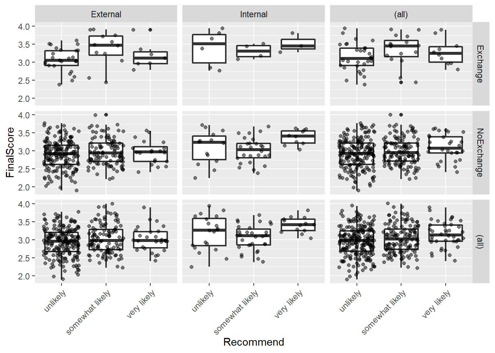
We see that we have only few students that have taken part in an exchange program and there are also only few internal students overall. With respect to recommendations, only few students are considered to very likely succeed in the program. We can now start with the modelling by using the “polr” function. To make things easier for us, we will only consider the main effects here as this tutorial only aims to how to implement an ordinal regression but not how it should be done in a proper study - then, the model fitting and diagnostic procedures would have to be performed accurately, of course.
## fit ordered logit model and store results 'm'
m <- polr(Recommend ~ Internal + Exchange + FinalScore, data = ordata, Hess=TRUE)
## view a summary of the model
summary(m)## Call:
## polr(formula = Recommend ~ Internal + Exchange + FinalScore,
## data = ordata, Hess = TRUE)
##
## Coefficients:
## Value Std. Error t value
## InternalInternal 1.04766 0.2658 3.942
## ExchangeNoExchange 0.05868 0.2979 0.197
## FinalScore 0.61574 0.2606 2.363
##
## Intercepts:
## Value Std. Error t value
## unlikely|somewhat likely 2.2620 0.8822 2.5641
## somewhat likely|very likely 4.3574 0.9045 4.8177
##
## Residual Deviance: 717.0249
## AIC: 727.0249The results show that having studied here at this school increases the chances of receiving a positive recommendation but that having been on an exchange has a negative but insignificant effect on the recommendation. The final score also correlates positively with a positive recommendation but not as much as having studied here.
## store table
(ctable <- coef(summary(m)))## Value Std. Error t value
## InternalInternal 1.04766394 0.2657891 3.9417109
## ExchangeNoExchange 0.05868108 0.2978588 0.1970097
## FinalScore 0.61574360 0.2606313 2.3625085
## unlikely|somewhat likely 2.26199764 0.8821736 2.5641185
## somewhat likely|very likely 4.35744190 0.9044678 4.8176858As the regression report does not provide p-values, we have to calculate them separately (after having calculated them, we add them to the coefficient table).
## calculate and store p values
p <- pnorm(abs(ctable[, "t value"]), lower.tail = FALSE) * 2
## combined table
(ctable <- cbind(ctable, "p value" = p))## Value Std. Error t value p value
## InternalInternal 1.04766394 0.2657891 3.9417109 8.090244e-05
## ExchangeNoExchange 0.05868108 0.2978588 0.1970097 8.438199e-01
## FinalScore 0.61574360 0.2606313 2.3625085 1.815173e-02
## unlikely|somewhat likely 2.26199764 0.8821736 2.5641185 1.034382e-02
## somewhat likely|very likely 4.35744190 0.9044678 4.8176858 1.452328e-06As predicted, Exchange does not have a significant effect but FinalScore and Internal both correlate significantly with the likelihood of receiving a positive recommendation.
# extract profiled confidence intervals
ci <- confint(m)
# calculate odds ratios and combine them with profiled CIs
exp(cbind(OR = coef(m), ci))## OR 2.5 % 97.5 %
## InternalInternal 2.850983 1.6958378 4.817114
## ExchangeNoExchange 1.060437 0.5950332 1.919771
## FinalScore 1.851033 1.1136253 3.098491The odds ratios show that internal students are 2.85 or 285 percent more likely compraed to non-internal students to receive positive evaluations and that a 1-point increase in the test score lead to a 1.85 or 185 percent increase in the chances of receiving a positive recommendation. The effect of an exchange is slightly negative but, as we have seen above, not significant.
References
Agresti, Alan. 2010. Analysis of Ordinal Categorical Data. Vol. 656. John Wiley & Sons.
Brown, James Dean. 2001. Using Surveys in Language Programs. Cambridge: Cambridge University Press.
Cronbach, Lee J. 1951. “Coefficient Alpha and the Internal Strucuture of Tests.” Psychometrika 16: 297–334.
Guttman, Louis. 1945. “A Basis for Analyzing Test-Retest Reliability.” Psychometrika 10 (4): 255–82.
Revelle, W., and Richard E. Zinbarg. 2009. “Coefficients Alpha, Beta, Omega and the Glb: Comments on Sijtsma.” Psychometrika 74 (1): 1145–54.